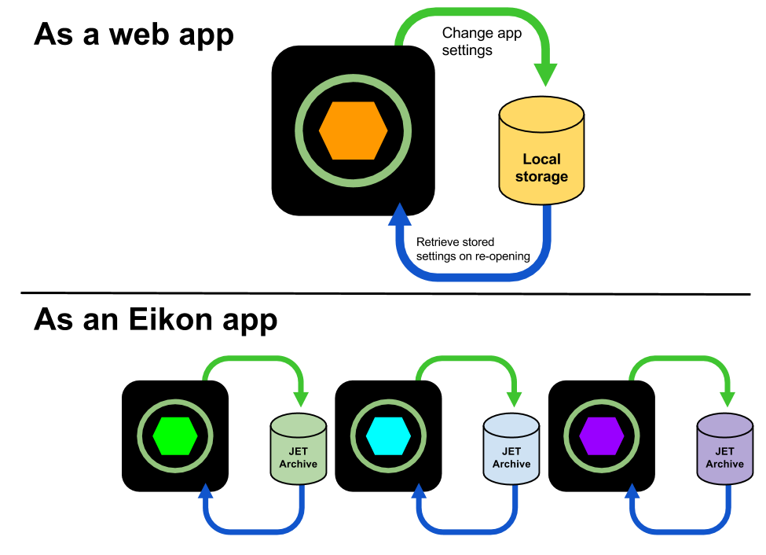
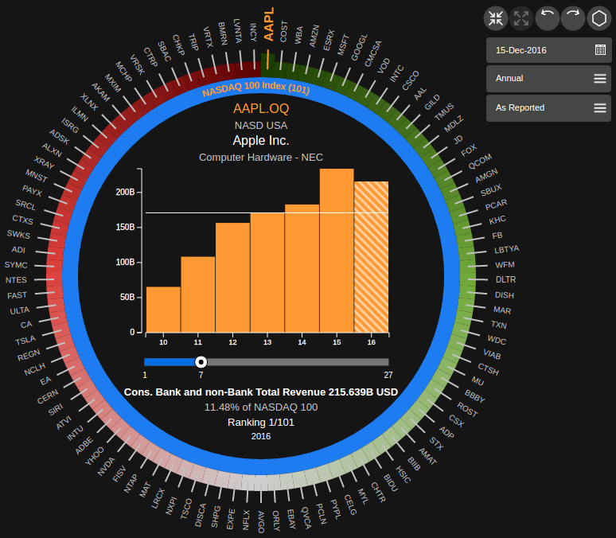
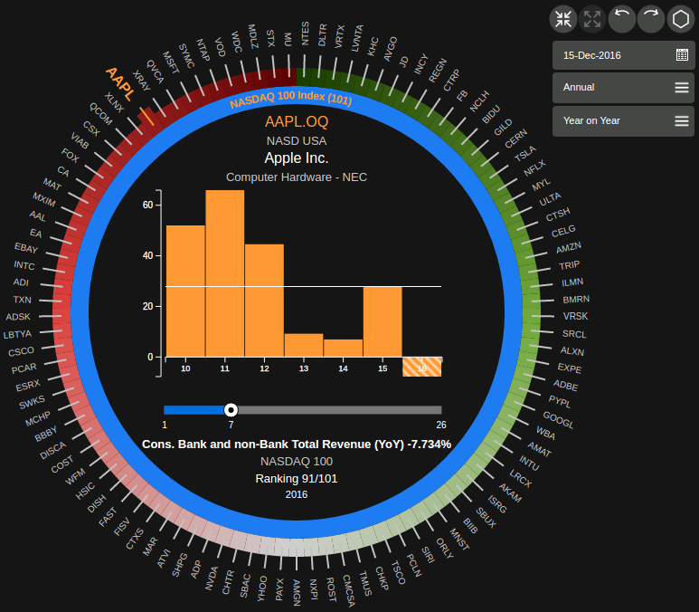

'Hello, World of
Agenda
- Background
- Project AlphaShapes
- Role & contributions
- Learnings
- Hacking AlphaShapes
Some things suck about being a student.
"How am I supposed to know this is what I want to do?"
"Am I really going to need this?"
"Why do all these entry-level jobs ask for a minimum of 5-200 years of experience!?"

AlphaShapes
Driven by data ingested using Python. A financial data visualisation tool built in React, Alt.js and D3.js.
Tasks and contributions
- Front-end and back-end stories
- Design & Documentation
- Implementation
- Test writing
- Code review
- QA
Front-End: Persistence
Front-End: Tooltips

Front-End: Linkage

Front-end: Year-on-Year
Front-end: Tree criteria menu


In the spirit of hoarding data:
- 2 repositories
- 116 files changed
- 33 JIRA items
- 140 GitHub contributions
- 8344 lines added
- 5100 lines removed
- 2 sprint review showcases
"Measuring programming progress by lines of code is like measuring aircraft building progress by weight"
15/16 Dec
RoZetta Hackathon "AnyShapes"
Mission
- Mock up an AlphaShapes-esque app to help rank people by their measurable skillsets.
- Generalise it, so that you can plug in any type of data you like. ("AnyDates AKA Tinder for financial experts", anyone?)


Learnings
- Technical Python & JavaScript skills.
- Front-end technologies and testing frameworks.
- Agile delivery can be stressful... In a good way.
- Testing may not be sexy, but it's important.
- Building a project from the ground-up.
- Do not start a dev ingestion for 500+ instruments at 5.30pm. :(
What's next?

Thank you!
Anthony, Benjamin, Daniel, Balram, Kenneth, Yohann, Ian, Cheney, Thiago, Nikola
Sabine, Stephany, Wen
Co-op & RoZetta!